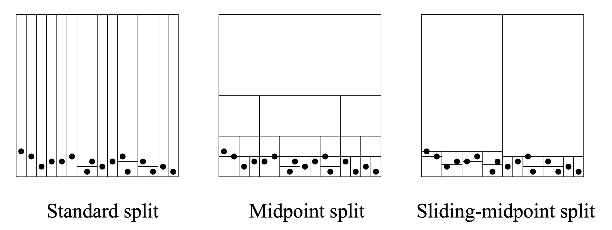
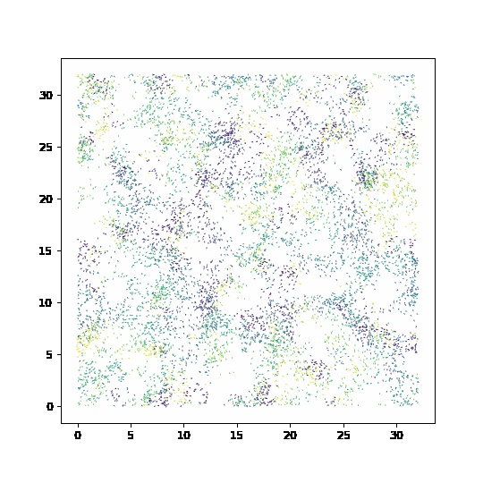

Swarm models
Contents
Swarm models#
How often have you seen a murmuration of starlings or baitball of mackerel in an introduction to complex systems? Models of collective behavior are staples of complexity science, yet they can be deceptively tricky to implement and simulate. These are commonly continuous time, continuous space, continuous state models where every agent is unique such that composition approaches are useless and events occur continuously. How can we tackle these effectively?
One common approach is to use the most naive algorithm for continuous system we have seen, discrete time simulations, but couple that approach with fast algorithms from image processing toolboxes.
The Vicsek model#
There are dozens of variants of models attempting to capture how collection of simple and noisy agents can produce coherent collective behavior. One classic example that we will tackle here is the Vicsek model. It consists of a dynamical system governing the movement of agents with fixed speed that simply attempt to align each other. The state of every agent \(i\) can therefore be specified by a position \(r_i = (x_i,y_i)\) and a direction \(\theta_i\), since its velocity \(v\) is fixed by the model. The position can be updated following the laws of motion, but the direction \(\theta_i\) will depend on the behavior of other agents \(\lbrace \theta_j\rbrace\). In practice, we might assume that agents are aware of the motion of other close-by agents, say within a radius \(r\), and thus re-orient themselves at a certain speed towards the average direction of their neighbors. However, their assessment might not be perfect and we therefore apply some random noise \(\eta\) to their new position. No one wants to be against the grain, but no one really knows what the grain is.
In practice, and since we will implement this as a discrete time simulation of the model, it is convenient to assume that the re-orientation process happens at a speed of one timestep. The discrete rules of the model are then as follows.
What can be so slow about an implementation of this model? As we said above, for a population of 1000 agents, these give us 3000 equations with no smart way to combine them. What is trickier, is that we need to identify the network of agents that are within a distance \(r\) of each other. Doing so by hand can be time consuming, unless we rely on existing smart routine.
kd-tree structure#
Our implementation is going to rely on the kd-tree algorithm from Maneewongvatana and Mount (1999). A kd-tree is a binary tree where nodes represent a hierarchically nested rectangles. At every branching of the tree, a rectangle is split on alternating dimensions of the original space either at the mid-point of that axis, or at the median point of contained data, or some smarter technique to avoid trivial splits. Therefore a node in the kd-tree contains all data points that lie within its rectangle, and its two children will contain the two complementary subsets that lie on one side or the other of a split. The figure below, reproduced from Maneewongvatana and Mount (1999) illustrates how different splitting procedures give you different nested hierarchies of rectangles. The process is stopped when rectangles contain a single point or reach a miminum size specified by the user.

The resulting data structure makes searching for nearest neighbors much faster than exhaustive search.
Simulation of the Vicsek model#
import numpy as np
import scipy as sp
from scipy import sparse
from scipy.spatial import cKDTree
import matplotlib.pyplot as plt
from matplotlib.animation import FuncAnimation
from IPython.display import HTML
#Parameters
L = 32.0 #size of the world
density = 8.5 #spatial density of agents
N = int(density*L**2) #number of agents
r = 1.0 #influence distance
deltat = 1.0 #timestep
v = 1.0 #velocity of agents
noise = 0.30 #scale of uniform noise in radiant
#initial conditions
pos = np.random.uniform(0,L,size=(N,2))
orient = np.random.uniform(-np.pi, np.pi,size=N)
#sets up the plot where color = orientation
fig, ax= plt.subplots(figsize=(6,6))
qv = ax.quiver(pos[:,0], pos[:,1], np.cos(orient), np.sin(orient), orient, clim=[-np.pi, np.pi])
#the model itself
def animate(i):
global orient
#cKDTree is a class that looks up nearest neighbors with different definitions
tree = cKDTree(pos,boxsize=[L,L])
dist = tree.sparse_distance_matrix(tree, max_distance=r,output_type='coo_matrix')
#important 3 lines: we turn the orientation of every agent to a phasor
data = np.exp(orient[dist.col]*1j)
# construct a new sparse matrix of positions for every neighbor
neigh = sparse.coo_matrix((data,(dist.row,dist.col)), shape=dist.get_shape())
# and sum along the columns (sum over j) to sum orientation of neighbors
S = np.squeeze(np.asarray(neigh.tocsr().sum(axis=1)))
#new orientation = average of close neighbors + noise
orient = np.angle(S)+noise*np.random.uniform(-np.pi, np.pi, size=N)
#calculate new positions
cos, sin= np.cos(orient), np.sin(orient)
pos[:,0] = pos[:,0] + deltat*v*cos
pos[:,1] = pos[:,1] + deltat*v*sin
#Periodic boundaries
pos[pos>L] -= L
pos[pos<0] += L
#update quiver plot
qv.set_offsets(pos)
qv.set_UVC(cos, sin,orient)
return qv,
#animation details
fps = 20
nb_seconds = 5
anim = FuncAnimation(fig,animate,frames=nb_seconds*fps,interval=1000/fps)
anim.save('vicsek.gif', dpi=90)
plt.close()
MovieWriter stderr:
Received > 3 system signals, hard exiting
